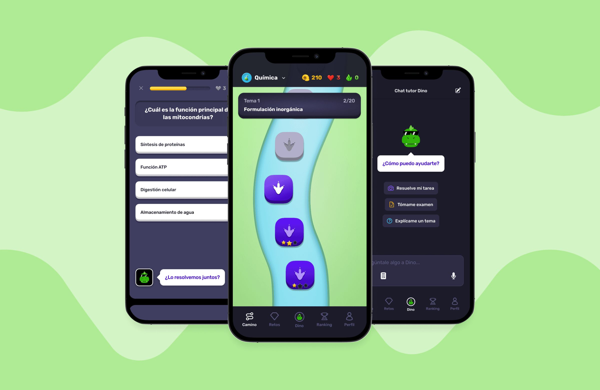
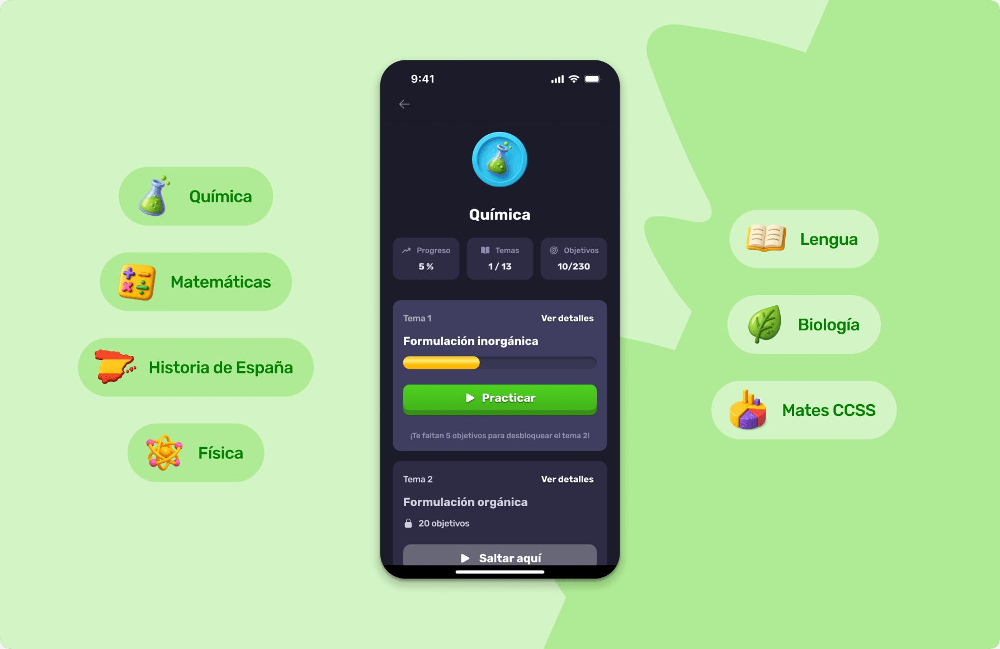
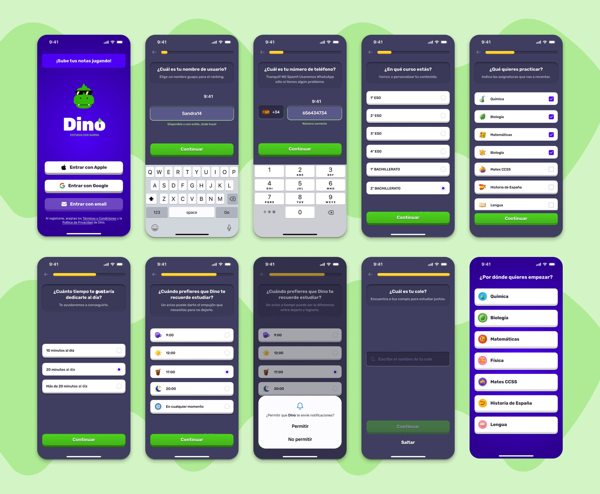
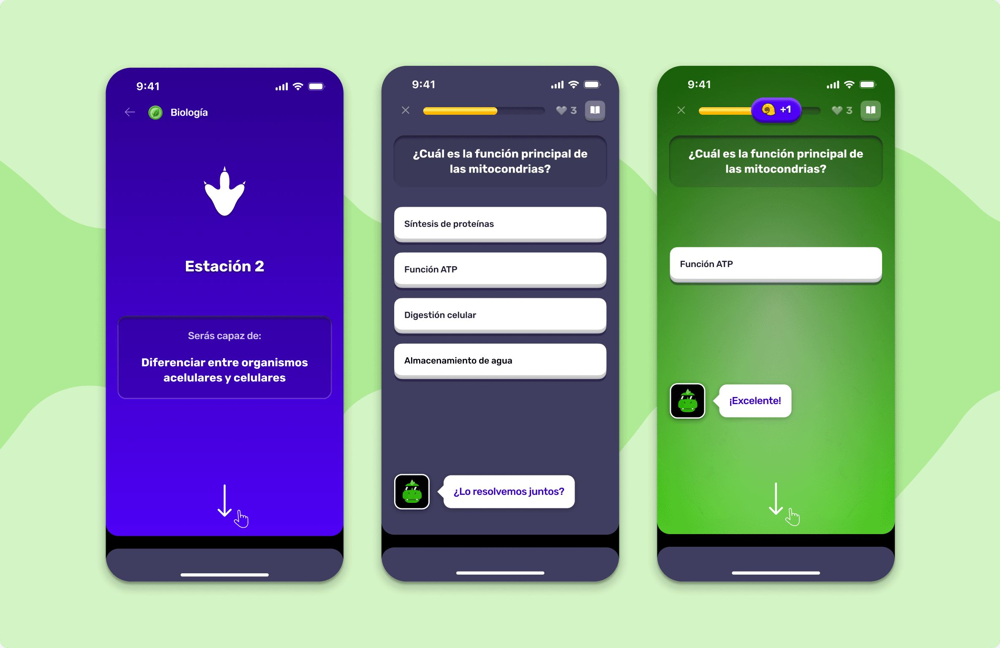
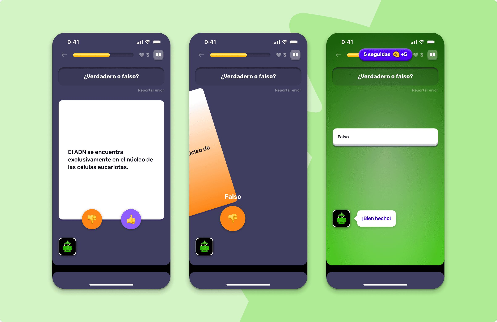
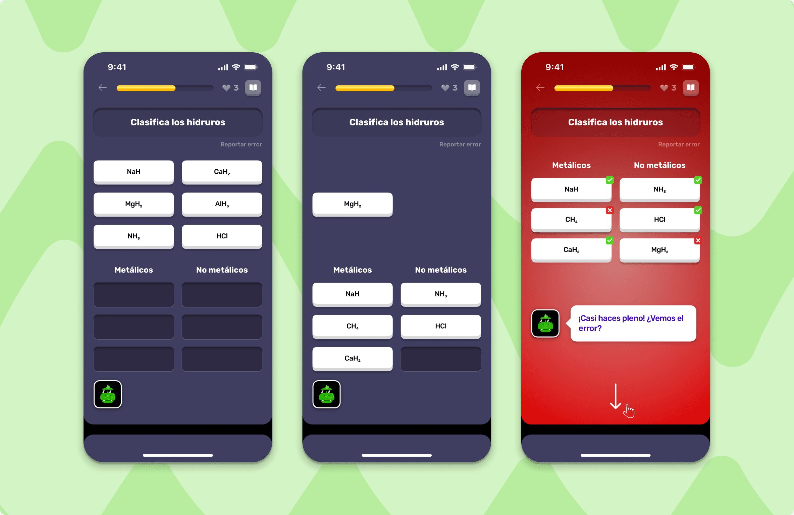
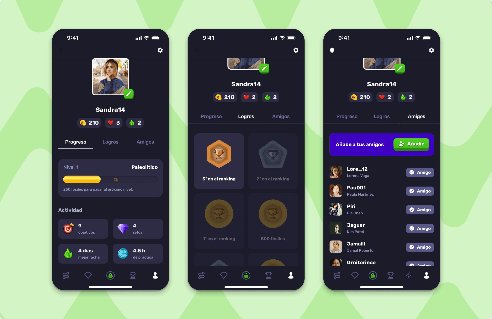
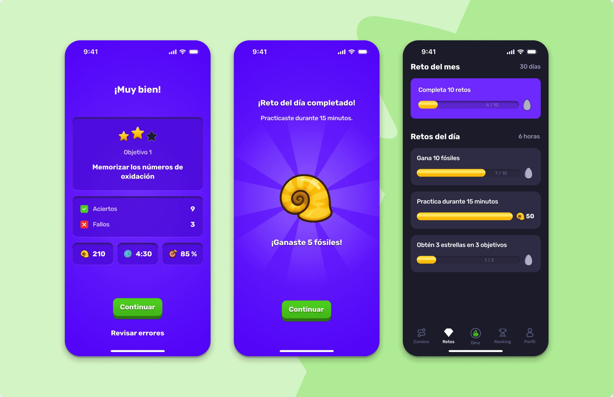

Dino by Ucademy
Building and validating a mobile learning app in 5 months

Dino was a new product line within Ucademy: a gamified, mobile-first learning app for students preparing for competitive exams. The question driving the project was: can a student build a consistent study habit on their phone, without any external support?

Discovery
We ran interviews with 6 students and 4 teachers. Five pain points came up consistently and shaped every design decision:
- They don’t know where to start or how to prioritize the syllabus.
- They have no real visibility into their progress. The only way to know is to take a test.
- They get stuck when they don’t understand something and have no one to ask.
- They default to passive learning (reading, highlighting, watching videos) when what they need is practice.
- When they’re lost, they search YouTube for someone to explain it to them.
Those five pain points became the five design principles for the MVP.

The MVP
Every feature in the MVP traces back to something a student said in an interview.
- Varied practice with immediate automated feedback
- Empathetic responses after each mistake
- Visible progress along a structured learning path
- Short-form video explanations (TikTok-style)
- An AI tutor for moments of confusion
- A leaderboard and friends invitations: The interviews hadn’t asked for either, but we believed social motivation would drive retention. Over time, the data would show that they added complexity without moving the metrics that mattered.

Measuring
We launched with four OKRs that measured exactly what we needed to validate: whether a teenager could build a self-directed study habit on mobile.
Downloads were coming in and ads were working. Onboarding completion reached 80%. But less than 2% of users returned within the first seven days.
The activation numbers told one story. Retention told a completely different one.
| MVP | Target | Result |
|---|---|---|
| Downloads | 1,000 | ✓ Met |
| Activation rate | 25% | ✓ Met |
| 7-day retention | 30% | ✗ Not reached |
| 30-day retention | 15% | ✗ Not reached |
| Avg. daily usage | 15 min | ✗ Not reached |

First iteration
Closing the gap between registration and real value
Hypothesis
Users were completing onboarding but not starting their first practice session. We assumed the onboarding flow was ending too early, before the user had experienced any real value from the product.
What we did
We added a mandatory first practice session at the end of onboarding, so users couldn’t leave without completing at least one exercise.
Result
+50% of users completing their first practice session. Early activation, validated. But this didn’t move retention.

Second iteration
Encouraging users to come back
Hypothesis
Users who had activated once weren’t returning because there was no trigger pulling them back. We assumed that adding external nudges would recover enough of them to move the 7-day retention metric.
What we did
We activated push notifications and automated email sequences to encourage return visits.
Result
Retention improved slightly, but nowhere near our OKRs. The problem wasn’t the absence of a reminder. The product itself wasn’t giving users a reason to come back.

Third iteration
The wrong call: Testing purchase intent too early
Hypothesis
The business team wanted to validate whether users would pay before investing further in the product.
What we did
We introduced a paywall at the end of onboarding, before users completed their first practice session.
Result
Drop-off increased significantly and the experiment returned no actionable data. Users hadn’t experienced the core value of the product yet, so their refusal to pay didn’t tell us whether they would pay after seeing it. We confirmed resistance, but we couldn’t tell if that resistance was about price, trust, or simply timing. Worse, we distorted the funnel at the moment of highest abandonment risk, before a single habit had formed.
The decision
After five months, the product showed no organic traction and no signs of sustained habit formation. Scaling Dino would have meant significant investment in content, infrastructure, and marketing, with no clear signals of product-market fit.
We decided to shut the project down and redirect resources to lines with stronger traction. That decision is also product work.

What I learned
Completing onboarding is not the same as activating.
What we assumed
90% onboarding completion meant users had understood the value of the product.
What data showed
A 2% 7-day retention rate says otherwise. Since then, I always track time to first real value, not time to first click.
Without a habit, there’s nothing to monetize
What we assumed
We could measure willingness to pay before users had established any recurrence.
What data showed
Without prior engagement, the paywall only measured friction. The experiment contaminated the funnel and gave us no useful signal about the business model.